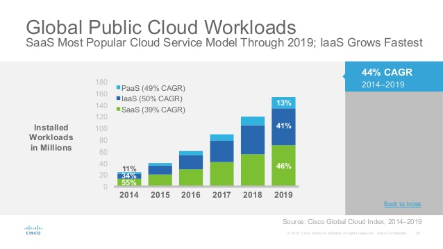
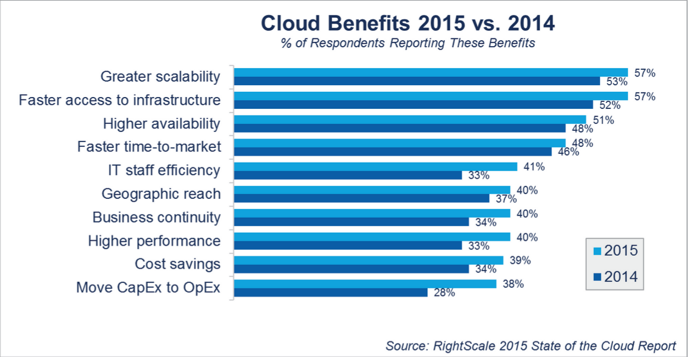

Primul Cloud Public în Moldova

Pentru a face față competiției în zilele noastre, companiile încep să folosească tot mai mult Tehnologiile Informaționale.
Micșorarea costurilor și optimizarea proceselor sunt principalele țeluri unei afaceri, iar pentru a-și atinge scopurile într-un timp cât mai redus și pentru o funcționare normală o afacere are nevoie de o infrastructură de calcul modernă.
Spre exemplu, un server pentru rularea programelor necesare (contabilitate, CRM), spațiu pentru stocarea informației, copii de rezervă a datelor, plan de recuperare a datelor, acces de la distanță pentru mai mulți utilizatori și nu în ultimul rând securizarea datelor.
Pentru a dispune de aceste servicii iar în același timp a reduce cheltuielile și a se concentra asupra afacerii de bază, managerii și administratorii companiilor își migrează infrastructura de calcul în Cloud.

Conceptul de “Cloud Computing” cuprinde trei ramuri: IaaS (Infrastructure as a Service), PaaS (Platform as a Service) și SaaS (Software as a Service). Iar pentru acest articol am ales să descriem Infrastructura ca Serviciu (IaaS).
Astfel toate componentele unei infrastructuri fizice precum serverele, spațiul de stocare a datelor, rețeaua sunt furnizate ca serviciu.
Aceasta înseamnă că oricine își poate crea un Centru de Date Virtual în doar câteva minute fără necesitatea de a investi o mulțime de bani și timp în procurarea de echipament, rack-uri și de a angaja o echipă IT pentru administrarea infrastructurii.
Modelul IaaS include niște caracteristici valoroase încât odată cu creșterea popularității acestui serviciu multe companii mici de hosting au preluat termenul de „Cloud” pentru descrierea serviciilor lor.
Însă ele sunt nici pe departe de „IaaS” și „Server Cloud”. Este ca și cum ai spune că vinzi avioane dar ele nu zboară.
Din această cauză utilizatorii trebuie să cunoască diferența dintre un Server Cloud și un VPS (Virtual Private Server), iar aici sunt principalele caracteristici a unui Server Cloud:
- resursele furnizate sunt ca serviciu. Utilizatorul nu este responsabil pentru echipament, uzura lui, pentru rețea, internet sau curent eletric sau alte servicii a unui Centru de Date ca aerul condiționat, securitatea și personalul calificat;
- scalabilitatea. Utilizatorul poate crește sau descrește fiecare resurs în parte (CPU, RAM, SSD) oricînd dorește cât și opri serverele;
- facturarea pay-as-you-go. Utilizatorul este facturat doar pentru resursele care le folosești. Cei mai importanți Provideri IaaS au sitemul de facturare pe oră și utilizatorul achită doar pentru orele în care ei au folosit resursele;
- Centru de Date Virtual. Utilizatorul își poate crea propriul Centru de Date Virtual cu servere virtuale, routere virtuale, firewalluri virtuale, VPN etc.

Astăzi, într-un mediu de afaceri atât de competitiv, managerii de top nu au timp să gândească dacă infrastructura lor va face față cu cerințele companiei.
Astfel găsind modelul IaaS ca soluția perfectă pentru problema data, beneficiind de următoarele avantaje:
Micșorarea Costurilor: Acest model exclude investițiile majore în infrastructura unui Centru de Date, în administrarea ei, asigurarea uptime-ului și înlocuirea echipamentului vechi.
Adăugând la aceasta și facturarea pe oră care la fel contribuie la micșorarea costurilor face ca acest model să înlăture abonamentele lunare sau anuale fixe mari pentru resursele care întreprinderea poate nici să nu le folosească.
Scalabilitatea și Flexibilitatea: Probabil cel mai important beneficiu al IaaS este autoservirea la cerere. Asta înseamnă că o întreprindere poate crește, descrește și opri resursele în doar câteva secunde pentru a se potrivi perfect cerințelor ei.
Concentrarea pe dezvoltarea afacerii: Migrând spre modelul IaaS companiile își creează mai mult timp și resurse pentru a se concentra pe direcția lor principală de afaceri.
Simplitatea: Providerii IaaS adevărați furnizează un Panou de control intuitiv și ușor de utilizat de unde pot controla infrastructura. La fel se furnizează și accesul la API.
Tot mai multe întreprinderi recunosc Infrastructura ca Serviciu ca fiind un instrument eficient pentru atingerea țelurilor afacerii lor asta datorându-se flexibilității și scalabilității în diferite situații a afacerii.
Întreprinderile cu perioade de afaceri sezoniere sau ciclice pot profita de acest model de serviciu întrucât necesitățile lor pentru resurse pot difera mult de la o perioadă la alta. Atât de la o oră la alta, cât și de la o lună la alta.
Spre exemplu un web site de știri sau un blog în cazul unei știri sau postări interesante care va atrage mult trafic pe site doar pentru o perioadă scurtă de timp.
Un magazin online la fel are perioade de promoții și reduceri care aduc un număr mare de vizitatori pe sait.
Sunt o mulțime de afaceri cu perioade sezoniere sau ciclice ale căror necesități de resurse diferă mult de la o perioadă la alta.
Majoritatea afacerilor necesită resurse doar în timpul programului lor de lucru, adică 8-14 ore pe zi. Deci restul 10-16 ore pe zi resursele nu sunt folosite și achitate în zadar, în cazul unui server dedicate sau VPS.
Ceea ce înseamnă că până la 70% din resurse și cheltuieli pot fi reduse cu ajutorul unui Server Cloud.
În timpul dezvoltării sau testării unui produs/serviciu nou, o nișă de afaceri nouă sau o strategie de marketing nouă au loc discrepanțe mari în necesitatea resurselor.
Migrarea unei aplicații CRM (Customer Relationship Management) spre IaaS poate fi făcută cu mai multă ușurință fără nevoia de a adăuga echipament nou și memorie, astfel minimizând volumul de lucru pentru departamentul IT.
Startup-urile care se confruntă cu o greutate la prezicerea popularității produsului sau serviciului lor sau pur și simplu nu au resursele financiare pentru achiziționarea de echipament și crearea infrastructurii proprii.
Întreprinderile care se dezvoltă rapid și nu au la dispoziție timpul necesar pentru creșterea sau construirea infrastructurii private.
Companiile care trebuie să investească în echipament nou pentru un proiect nou sau existent, sau pentru o aplicație mare și totodată doresc să minimizeze cheltuielile pentru echipamente și personalul IT.
Astfel întreprinderile pot reduce cheltuielile lor în timpul perioadelor inactive și mări capacitatea resurselor în timpul perioadelor active.

Unele afaceri au cerințe mai speciale pentru echipament și în acest caz ei nu pot utiliza Infrastructura Virtuală dar vor recurge la un Cloud Privat sau Cloud Hybrid.